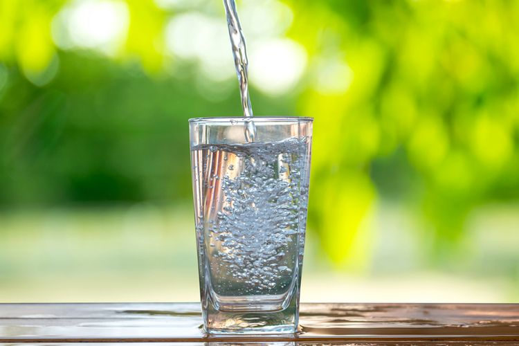

Odin Recipes
Air Putih

Air Putih. Pinnacle of human beverages, air putih is just plain drinking water.
What more can we say about this classic? You can't live without 'em!
The Ingredients
Water
Cooking Steps
Drinking
Drinking water, I mean, Air Putih is Served!